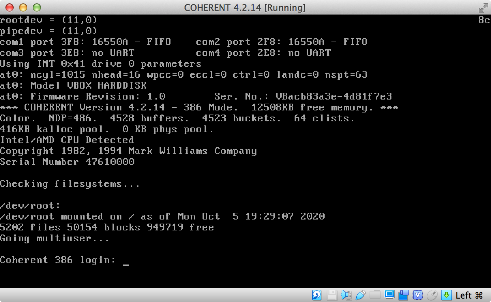

Back
Latest news about COHERENT:
17-DEC-2021:
Uploaded disk images for 8086 COHERENT 2.3.43 as well as the manuals,
provided by Wouter Visscher.
01-DEC-2020:
Uploaded disk contents with MWC C 1.0 and 3.0.5 for the Atari machines,
and the manual rev 3 PDF.
26-NOV-2020:
Uploaded 4.0.r74 dev system with full MWC sources. Development tools
(compiler, assembler, linker, librarian, lex, yacc, m4) and runtime
libraries active are the self compiled ones. Made sure that everything
builds with them, system now is self contained and can be modified
in any way.
19-NOV-2020:
While toying arround with some VGA demo scene stuff I noticed, that
handling of inline code was not properly ifdef'ed in vga.h, but
gcc 2.5 can inline code. Makes a notable difference, fixed that and
uploaded new library source.
09-NOV-2020:
New COHERENT 4.2 VM's and disk images uploaded to web site. The 4.2
systems have more software from the MWC archive installed as well
as some other available Open Source software.
Then I added the top like hmon program to 4.2.10, in 4.2.14 it is
included in the distribution.
I improved MWC's cpp so that it now can handle the comment macro
used in imake templates. New compiler bits are installed on the
4.2.10 and 4.2.14 systems.
#define XCOMM \#
XCOMM this is a comment
now correctly expands to
# this is a comment
05-NOV-2020:
Fixed some issues in COHERENT 3.2 /usr/src/sys/usr/games sources.
Fortune did't work because program and database didn't match, used
Steve's latest source. Then fixed some permission issues, now guess
can write it's database and learn.
02-NOV-2020:
Uploaded new 4.0 disk images with GNU make compiled from sources.
Also added unproto to the systems to be able to compile ANSI C.
Put the r78 kernel sources on the r74 system and build kernel
from sources.
26-OCT-2020:
Updated all web pages to current status.
20-OCT-2020:
Steve Ness provided better Let'C manual and also a manual for csd, uploaded
here too.
Updated the 4.0.72 graphics workstation disk image, the machine also
has a working MGR installed now.
Updated the 4.0.68 graphics workstation disk image. MGR works on QEMU
but not on PCem, because this COHERENT release has bugs in the tty
line discipline, and a serial mouse won't work with that.
19-OCT-2020:
Build COHERENT 4.0 r74 graphics workstation with VGA console graphics and
working Bellcore MGR.
18-OCT-2020:
Build COHERENT 4.0 r72 graphics workstation with VGA console graphics and
Bellcore MGR, still same problem.
16-OCT-2020:
Made COHERENT 4.0 r68 graphics workstation with VGA console graphics and
Bellcore MGR available, produced video showing the system.
Santo Nucifora provided much better scans of the Commodore-900
COHERENT manuals, many thanks. Uploaded here too.
13-OCT-2020:
Uploaded my current VM's and disk images and added the new 4.2.14 version.
12-OCT-2020:
Sometimes there is interest in MWC Let's C, the MWC C compiler ported to
DOS. So we made disk images and a reproduced manual available for download.
The manual of the last version was produced with COHERENT roff on a PDP-11
in 1987. Steve Ness recreated a readable manual from the old sources as
good as possible, quite amazing after the long time.
05-OCT-2020:

I was able to revive COHERENT 4.2.14, the kernel is build from the
sources of the MWC source archive.
02-OCT-2020:
Fiddled days with some old floppy disks from 1993 to get them imaged
without error. Now we have the r72 update for COHERENT 4.0, which is
required to run ASC X11, uploaded that update. Then I build a 4.0.1r72
box on PCem and installed ASC X to see if everything works.
30-SEP-2020:
Uploaded my personal archive with UNIX software ported to COHERENT systems,
all sites that used to archive this software seem to be gone.
29-SEP-2020:
Uploaded new 4.0 disk image with modified /etc/rc & brc, so that
all kernels boot with correct date/time.
27-SEP-2020:
Uploaded new disk image with my current 3.2 source development system
with bug fixes, improvements, some new retro software under /usr/local.
11-FEB.2020:
Uploaded new disk image with my current 3.2 source development system
with bug fixes, improvements, some new retro software under /usr/local.
31-JAN-2019:
Uploaded new disk image with complete 321 sources with many
improvements.
10-DEC-2018:
Upladed new disk image with complete 321 sources. Other than uucp
the whole system can be build from the sources.
The disk also includes some more game software under /usr/local
for testing compiler, roff etc. on the self build 321 system.
05-DEC-2018:
Moved /usr/src/sys to another 30MB partition, so that there is enough
disk space for the build system.
Sources for /bin and /usr/bin are almost complete, uucp and some
other less essential stuff is not done yet.
Build system libraries from the 321 sources and setup headers/libraries,
so that the whole system is build from the latest bits.
27-NOV-2018:
Added most sources for /bin and /usr/bin to the 3.2.0 development disk,
including all development tools. The build disk self now is usable as a
development system.
16-NOV-2018:
Put enough of the 3.2.1 sources onto the 3.2.0 development disk to
build a COHERENT system from sources on another harddisk. Enough stuff
is added, so that the build disk boots in single and multiuser mode.
08-NOV-2018:
Put kernel sources for 3.2.0 onto the 3.2.0 VM disk image and build
bootable kernel, uploaded disk image.
07-MAR-2018:
Uploaded my latest COHERENT 4.2 Virtualbox VM, the disk image from the
VM, and a disk image for usage with PCem, that is configured to run the
color X11 server. Wrote documentation how to reconfigure the system
for running under PCem.
05-MAR-2018:
Uploaded more manuals and distribution disk images. Build Y2K fixed
installation disks for all x86 COHERENT releases. Wrote documentation
about COHERENT installations on QEMU and PCem. Build disk images with
ready to use COHERENT 3.1, 3.2 and 4.0 installations.
25-NOV-2017:
Uploaded some more MWC distribution disks I imaged from the floppy disks
I still have from that era. Interesting is the r74 upgrade for 4.0, one
would need this for running the Bellcore MGR Window System.
19-NOV-2017:
Uploaded MWC distribution disks for the GNU compiler sources
and CohWare Volumes 2 and 3.
11-NOV-2017:
Uploaded new VM with more MWC sources and disk images for usage with
other virtualizations.
24-OCT-2017:
Uploaded scan of the COHERENT 3.0 and 4.0 manuals.
11-OCT-2017:
Uploaded MWC product images for COHERENT 3.0, 3.1, 3.2 and 4.0.
Uploaded manual for /rdb and the ANSI C Lexical Guide.
11-AUG-2016:
Uploaded z80pack-1.7, the version from Walnut Creek CP/M CD-ROM.
03-MAY-2016:
Uploaded new VM with many more MWC sources under /u1/src.
Also added RCS to the system, so that one can look into the old revisions.
Added file /COPYING with the license text, because the text in the VM is
not persistent.
10-MAR-2016:
Brought MWC sources for 386 development tools, system libraries, shells etc.
on the system and made sure everything can be build from the sources.
New Virtualbox VM uploaded.
07-MAR-2016:
Tried to get Soundblaster 16 driver and tracker mod player working. The
driver finds the sound card under Virtualbox, but playing .mod files
with tracker crashes the kernel. Needs hacking, uploaded to ftp server
for anyone with enough spare time to mess with it.
05-MAR-2016:
Virtualbox 5.0.16 is released and it fixes some issues, updated web site.
04-MAR-2016:
Made my first public release of z80pack from 1992 working under COHERENT 4.2
and re-licensed it under a more liberate license. Uploaded to ftp server.
29-FEB-2016:
Uploaded new VM that includes vgalib and the complete /u1/gnu bits.
Fixed a typo in README for termios2016.tgz, new version uploaded too.
24-FEB-2016:
Revised Harry's port of vgalib, so that it can be integrated clean
into the system. Has some example programs, works OK.
Got Steve's beautiful programs for vgalib, modified them a bit so
they use the system vgalib, that was the plan anyway.
This stuff will be included in future VMs, to do it your self do this:
Get termios2016.tgz, unpack in /u1/src and do what README says.
Get vgalib2016.tgz, unpack in /u1/src and do what README.Coh says.
Get screen.tgz, unpack in you home directory, make, run the programs
and watch the fun.
23-FEB-2016:
Revised my old termios bits and integrated it into the system. Will
be included in future VMs, uploaded tarball so that it is available
for others to use.
22-FEB-2016:
Uploaded new VM with kernel sources 4.2.10, 4.2.12 and 4.2.14. The
sources are under /u1/src, you'll also find some documentation there,
how to build the kernels your self. Also the kernels I've build
are on /, 4.2.14 will boot but won't work.
20-FEB-2016:
Finished documentation for installation of the MWC products on Virtualbox.
Got kernel 4.2.14 build from the sources from Steve's archive. Kernel
boots, but system won't work, shells abort. Probably system misconfiguration,
needs more work. So no new VM yet.
18-FEB-2016:
I have uploaded a new exported VM that includes kernel sources, so
that everyone who wants can build the kernel self.
17-FEB-2016:
Fixed Coherent -> COHERENT all over the place, I should know better.
Various other improvements for the web site.
15-FEB-2016:
Fixed the usual typos, some better wording here and there.
Completed installation instructions for Coherent.
14-FEB-2016:
Brought web site online.
Back